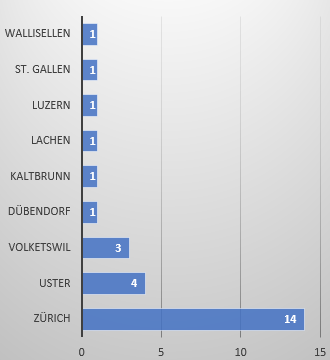

Hier findest diverse Statistiken über unser Vereinsleben. Die Daten werden laufend aktualisiert. Letztes Update: 14.01.2024.
Seit dem 21. November 2021 bis heute haben neben der Gründungsversammlung
- 22 Monatsessen
- 2 Vereinsausflüge und
- 2 Generalversammlungen
stattgefunden. Erst ein einziger offizieller Termin fiel mangels Teilnehmer aus. Keep it up!
Wir Gourmen sind Geschmacksentdecker und lieben die Küche aus aller Welt. Hier unsere Hitlist:

In Zürich gibt's halt viel, aber man könnte uns im Moment schon noch als Nesthocker bezeichnen:
